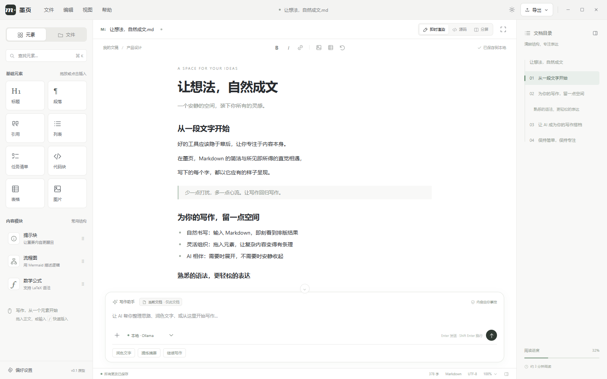
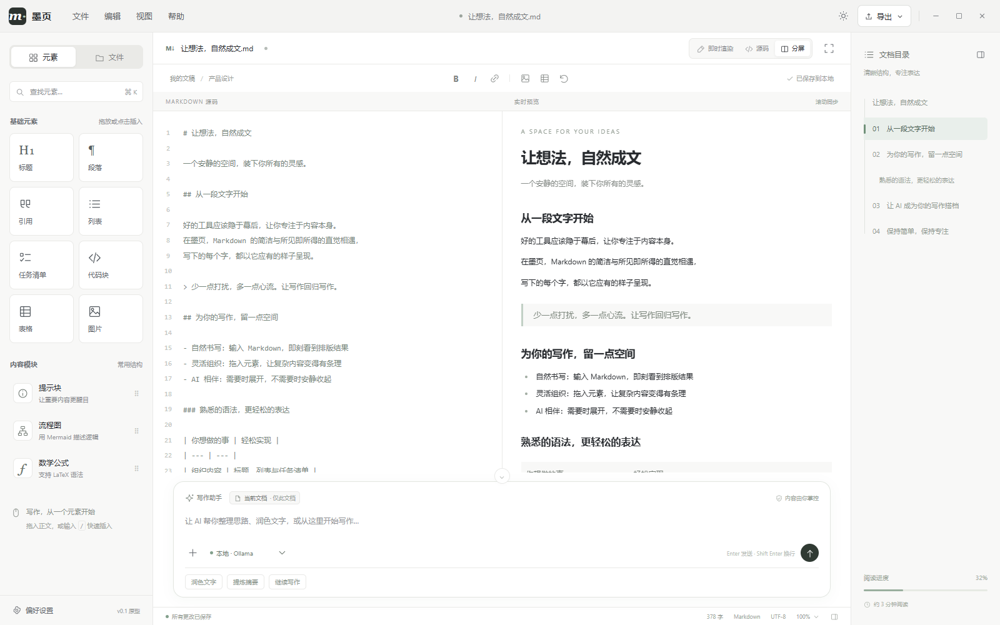
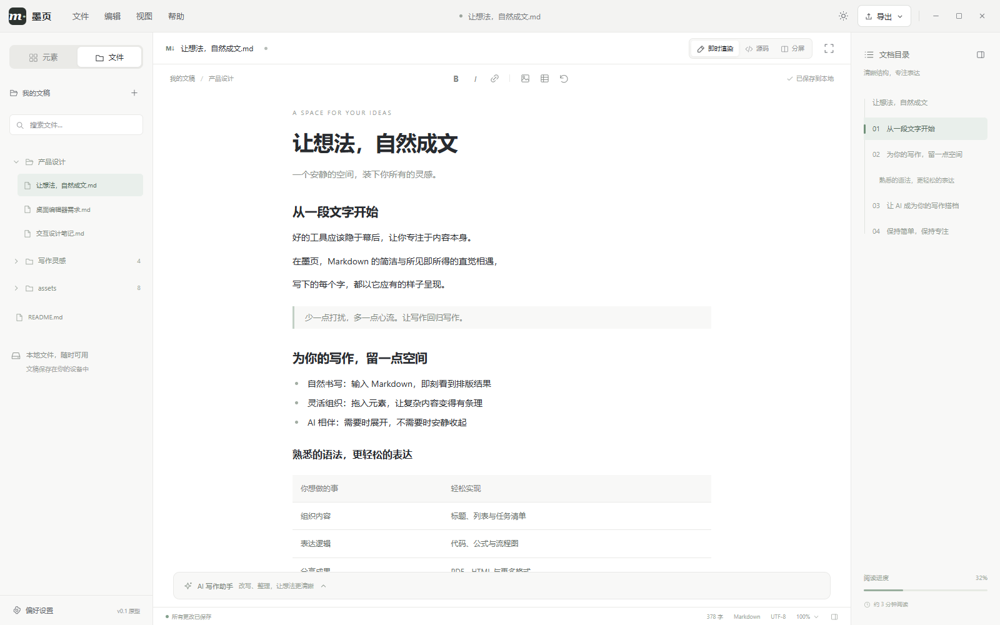
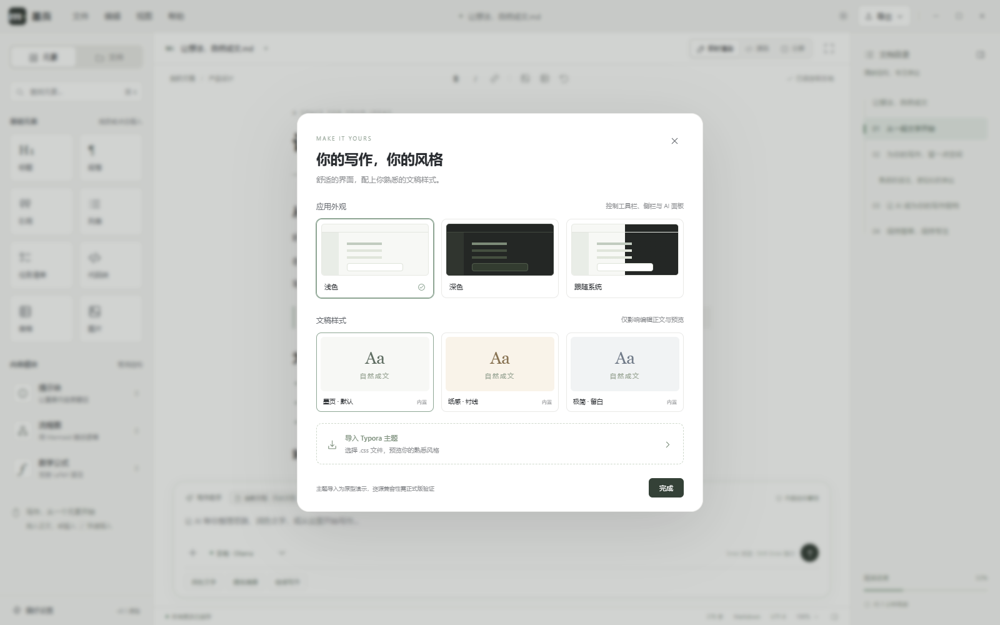
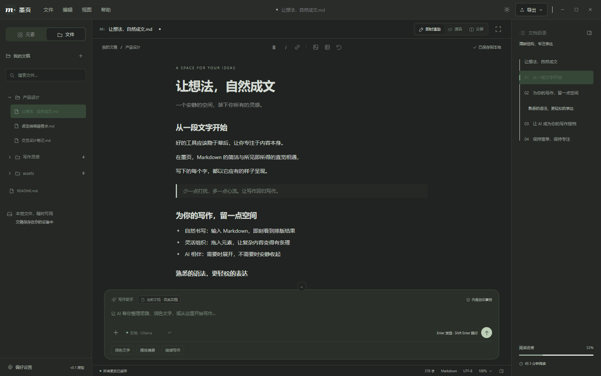
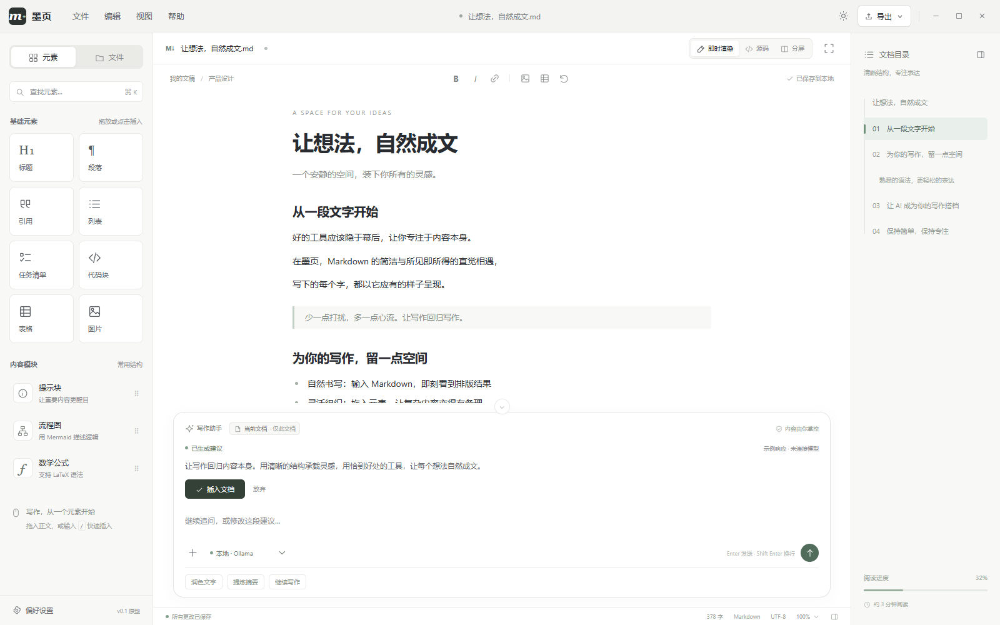

MOYE / MARKDOWN IDE
让想法，自然成文。
三栏写作空间 · 即时渲染与分屏 · 可收起 AI 助手 · 自由切换风格


01 / DEFAULT安静、有序的写作空间
左侧拖放元素，中间即时编写，右侧目录定位；AI 默认展开。


02 / SPLIT VIEW语法与呈现，同时看见
仅拆分中间编辑区，源码与预览并排，侧栏与 AI 位置保持稳定。


03 / FOCUSED WRITING工具收起，内容向前
元素 / 文件一键切换；AI 收为单行入口，为正文留出更多空间。


04 / APPEARANCE你的写作，你的风格
应用外观与文稿样式分开设置，提供 Typora CSS 导入流程。


05 / DARK MODE夜间写作，也能保持舒适
低饱和深色覆盖工具栏、侧栏、正文与 AI，保留清晰的信息层级。


06 / AI ASSISTANT灵感相伴，决定权在你
示例建议先展示，再由用户确认插入；本地、远程与官方服务入口统一。